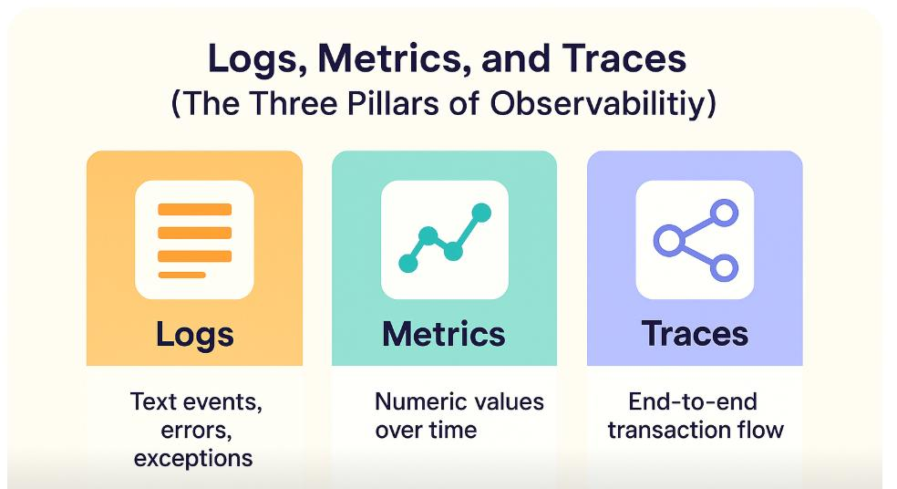
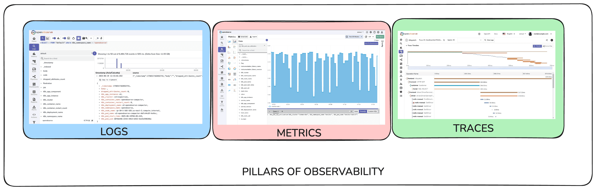
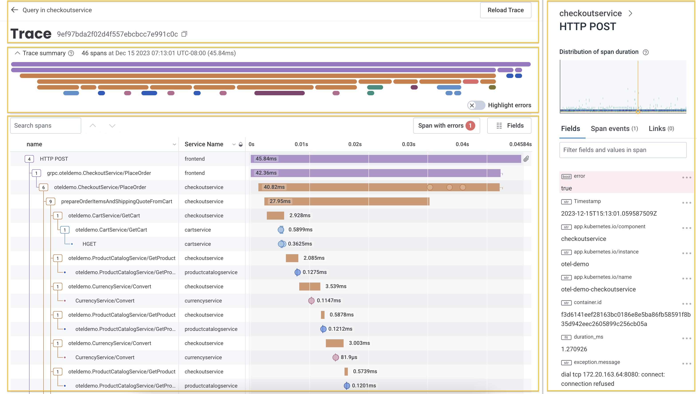

System Design Mastery
Master scalable systems with premium insights
🔍 Observability
📚 Quick Navigation
🔍 What it is Observability ?
Observability is the ability to understand what's happening inside a system by looking at its outputs (logs, metrics, traces).

🔍 Observability Overview - Understanding System Outputs
❓ Why Observability is Needed
🎯 In modern systems (microservices, distributed systems):
- Many services
- Many servers
- Many requests
🚨 If something fails:
👉 You must quickly answer:
- What went wrong?
- Where did it fail?
- Why did it fail?
✅ Observability helps you do that.
🏛️ Core Pillars of Observability
1️⃣ Metrics ( Monitoring )
Numerical data about system performance.
📊 Examples:
- CPU usage
- Memory usage
- Request count
- Error rate
💡 Example:
- Requests per second = 10,000
- Error rate = 2%
- Latency = 200ms

📊 Metrics Dashboard Example
2️⃣ Logs ( Logging )
Detailed records of events.
📝 Logs are:
- Detailed
- Text-based
- Event-specific
📋 Examples:
- Error messages
- Warning
- Exceptions
💡 Example:
2026-04-09 10:21:33 INFO UserService User 123 logged in
2026-04-09 10:21:35 ERROR PaymentService Payment failed: insufficient funds
3️⃣ Traces (Distributed Tracing)
Tracks a request across multiple services.
Shows full request journey
📖 Example (Microservices)
User Request
↓
API Gateway
↓
User Service
↓
Order Service
↓
Payment Service
Tracing shows:
- 👉 Where time was spent
- 👉 Where failure happened

🔗 Distributed Tracing Visualization
📖 Explanation of Image
📊 Top Section
Trace Summary → 46 spans → 45.84ms
Meaning:
- One request
- Passed through 46 operations
- Took 45ms total = TOTAL time taken by the entire request
🔗 Middle Section (Timeline)
Colored bars = spans (service calls)
Each block = Span
Span contains:
- Service name
- Duration
- Operation (GET/POST)
- Status (success/error)
💡 Example:
HTTP POST (frontend)
↓
→ CheckoutService
↓
→ CartService
↓
→ ProductService
↓
→ CurrencyService
Each bar shows:
- Which service handled request
- How much time it took
We have different operations inside the same service
Inside Checkout Service, there are multiple steps:
Checkout Service
├── prepareOrderItems → 27.95 ms
├── getCart → 2.928 ms
└── currency convert → 3 ms
These are internal function calls.
- 👉 Some calls happen in parallel (async)
- 👉 Some happen sequentially (sync)
⏱️ Latency Analysis
You can see:
- Frontend: 45ms
- Checkout: 40ms
- Cart: 2ms
👉 This helps identify slow services
Look at longest bars
👉 Those are bottlenecks
Example: prepareOrderItems = 27 ms 🔥 (slow)
💡 Example (Real System – PayPal)
User makes payment.
🔄 Flow:
Client
↓
API Gateway
↓
Auth Service
↓
Payment Service
↓
Database
🚨 If payment fails:
Observability tells:
- Auth OK?
- Payment failed?
- DB slow?
🆚 Observability vs Monitoring
| Feature | Monitoring | Observability |
|---|---|---|
| Goal | Detect known issues | Understand unknown issues |
| Focus | Alerts | Deep insights |
| Example | CPU > 90% alert | Why CPU increased |
🛠️ Tools Used
Popular tools:
- Metrics → Prometheus, Grafana
- Logs → ELK Stack (Elasticsearch, Logstash, Kibana)
- Tracing → Jaeger, Zipkin
- Datadog → All-in-one
🔗 What is Correlation ID?
A correlation ID is a unique identifier assigned to a request to trace it across multiple services in a distributed system.
Correlation ID is a simple identifier used to track requests across services through logs, while distributed tracing tools like Jaeger or Zipkin provide detailed visibility into request flow, latency, and service interactions. Correlation IDs are often used alongside tracing to simplify log correlation.
- 👉 Correlation ID = identify request
- 👉 Tracing = understand journey of request
🏗️ Why Observability Matters in Microservices?
❌ Without observability:
- Hard to debug
- No visibility
- Slow issue resolution
✅ With observability:
- Faster debugging
- Better reliability
- Improved performance
🧠 Simple Analogy
🚗 Think of a car dashboard:
- Speed meter → Metrics
- Warning lights → Logs
- GPS route → Traces
Together, they tell you everything.
- Observability is the ability to monitor and understand a system's internal state using metrics, logs, and traces to debug and analyze behavior.
- It enables faster debugging and root cause analysis in distributed microservices.
- Unlike monitoring, it provides deep insights into why issues occur, not just alerts.